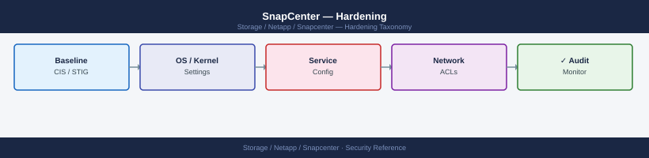

SnapCenter — Hardening¶

Before you begin¶
- Access: Storage admin credentials (cluster admin or equivalent)
- Change management: security changes require CAB approval in most environments
- Rollback plan: document current state before any security control change
- Testing: validate in a non-production environment first where possible
Hardening Checklist¶
Apply this baseline at installation and validate quarterly. Each item links to the relevant configuration section below.
Initial Build¶
- [ ] Default
adminpassword changed from the installation default; stored in a secrets vault (HashiCorp Vault, CyberArk, or equivalent) - [ ] SnapCenter Server VM is dedicated to SnapCenter only — no other applications or services running on the same Windows Server
- [ ] Windows Server hosting SnapCenter is hardened per the CIS Windows Server Benchmark (Level 1 minimum)
- [ ] Default self-signed TLS certificate replaced with a CA-signed certificate on port 8146 before granting user access
- [ ] TLS 1.0 and 1.1 disabled in Windows SCHANNEL registry; TLS 1.2 minimum enforced
Access Control¶
- [ ] All operational users authenticate via Active Directory groups — no individual AD user accounts directly granted where group membership is manageable
- [ ] MFA enabled via SAML 2.0 IdP integration if SnapCenter 6.0+ is deployed and an IdP is available
- [ ] SnapCenter
adminlocal account is treated as a break-glass account only; its usage is monitored via audit logs - [ ] ONTAP service account uses a custom least-privilege RBAC role — not
vsadminoradmin; see Access Control - [ ] Plugin host credentials stored in SnapCenter Credential Store; no plaintext passwords in automation scripts or configuration files
- [ ] RBAC roles configured such that application owners (DBAs, sysadmins) can trigger restores and clones for their own resources without SnapCenter Admin access
Network¶
- [ ] Network access to port 8146 (GUI/API) restricted by firewall or NSG to authorised management workstations and automation hosts only
- [ ] Network access to port 8145 (agent communication) restricted to allow only from the SnapCenter Server IP to managed hosts — not open to all hosts
- [ ] SnapCenter Server is not exposed to the internet; access is from corporate network or VPN only
- [ ] SMTP notification relay uses TLS (port 587 with STARTTLS or port 465 SMTPS) — not plain SMTP on port 25
Monitoring and Audit¶
- [ ] Audit log review included in weekly operational checks — Settings → Settings → Audit Logs
- [ ] Email notifications configured for all resource groups on
On Error or Warning— storage team alerted on every backup failure - [ ] Log partition on the SnapCenter Server monitored for size — log rotation or archive configured to prevent disk fill
- [ ] SnapCenter Server and MySQL repository backed up daily; backup restored and tested quarterly
ONTAP Service Account Hardening¶
The ONTAP service account used by SnapCenter must follow the principle of least privilege. The account needs access to snapshot, SnapMirror, LUN, and volume operations — but not full cluster admin.
# On the ONTAP cluster — create a dedicated SnapCenter service account
# Step 1: Create a custom role with only the required permissions
security login role create -role sc-backup-role -cmddirname "DEFAULT" \
-access none -vserver <cluster-name>
# Grant required command access
security login role create -role sc-backup-role -cmddirname "volume" \
-access all -vserver <cluster-name>
security login role create -role sc-backup-role -cmddirname "snapshot" \
-access all -vserver <cluster-name>
security login role create -role sc-backup-role -cmddirname "snapmirror" \
-access all -vserver <cluster-name>
security login role create -role sc-backup-role -cmddirname "lun" \
-access all -vserver <cluster-name>
security login role create -role sc-backup-role -cmddirname "lun igroup" \
-access all -vserver <cluster-name>
security login role create -role sc-backup-role -cmddirname "vserver export-policy" \
-access all -vserver <cluster-name>
security login role create -role sc-backup-role -cmddirname "storage aggregate" \
-access readonly -vserver <cluster-name>
security login role create -role sc-backup-role -cmddirname "network interface" \
-access readonly -vserver <cluster-name>
security login role create -role sc-backup-role -cmddirname "event log" \
-access readonly -vserver <cluster-name>
# Step 2: Create the service account with ontapi and http access
security login create \
-username svc-snapcenter \
-application ontapi \
-authentication-method password \
-role sc-backup-role \
-vserver <cluster-name>
security login create \
-username svc-snapcenter \
-application http \
-authentication-method password \
-role sc-backup-role \
-vserver <cluster-name>
# Step 3: Verify the account and role
security login show -username svc-snapcenter
security login role show -role sc-backup-role
Expected outputcluster1::> security login role create -role sc-backup-role -cmddirname "DEFAULT" \
-access none -vserver cluster1
(no output — command completes silently)
cluster1::> security login role create -role sc-backup-role -cmddirname "volume" \
-access all -vserver cluster1
(no output — command completes silently)
cluster1::> security login role create -role sc-backup-role -cmddirname "snapshot" \
-access all -vserver cluster1
(no output — command completes silently)
cluster1::> security login role create -role sc-backup-role -cmddirname "snapmirror" \
-access all -vserver cluster1
(no output — command completes silently)
cluster1::> security login role create -role sc-backup-role -cmddirname "lun" \
-access all -vserver cluster1
(no output — command completes silently)
cluster1::> security login role create -role sc-backup-role -cmddirname "lun igroup" \
-access all -vserver cluster1
(no output — command completes silently)
cluster1::> security login role create -role sc-backup-role -cmddirname "vserver export-policy" \
-access all -vserver cluster1
(no output — command completes silently)
cluster1::> security login role create -role sc-backup-role -cmddirname "storage aggregate" \
-access readonly -vserver cluster1
(no output — command completes silently)
cluster1::> security login role create -role sc-backup-role -cmddirname "network interface" \
-access readonly -vserver cluster1
(no output — command completes silently)
cluster1::> security login role create -role sc-backup-role -cmddirname "event log" \
-access readonly -vserver cluster1
(no output — command completes silently)
cluster1::> security login create \
-username svc-snapcenter \
-application ontapi \
-authentication-method password \
-role sc-backup-role \
-vserver cluster1
(no output — command completes silently)
cluster1::> security login create \
-username svc-snapcenter \
-application http \
-authentication-method password \
-role sc-backup-role \
-vserver cluster1
(no output — command completes silently)
cluster1::> security login show -username svc-snapcenter
Vserver: cluster1
User Name: svc-snapcenter
Application: ontapi
Authentication Method: password
Role Name: sc-backup-role
Account Locked: false
Vserver: cluster1
User Name: svc-snapcenter
Application: http
Authentication Method: password
Role Name: sc-backup-role
Account Locked: false
cluster1::> security login role show -role sc-backup-role
Role Name: sc-backup-role
Vserver: cluster1
Command/Directory Name: DEFAULT
Access Level: none
Role Name: sc-backup-role
Vserver: cluster1
Command/Directory Name: volume
Access Level: all
Role Name: sc-backup-role
Vserver: cluster1
Command/Directory Name: snapshot
Access Level:
¶
cluster1::> security login role create -role sc-backup-role -cmddirname "DEFAULT" \
-access none -vserver cluster1
(no output — command completes silently)
cluster1::> security login role create -role sc-backup-role -cmddirname "volume" \
-access all -vserver cluster1
(no output — command completes silently)
cluster1::> security login role create -role sc-backup-role -cmddirname "snapshot" \
-access all -vserver cluster1
(no output — command completes silently)
cluster1::> security login role create -role sc-backup-role -cmddirname "snapmirror" \
-access all -vserver cluster1
(no output — command completes silently)
cluster1::> security login role create -role sc-backup-role -cmddirname "lun" \
-access all -vserver cluster1
(no output — command completes silently)
cluster1::> security login role create -role sc-backup-role -cmddirname "lun igroup" \
-access all -vserver cluster1
(no output — command completes silently)
cluster1::> security login role create -role sc-backup-role -cmddirname "vserver export-policy" \
-access all -vserver cluster1
(no output — command completes silently)
cluster1::> security login role create -role sc-backup-role -cmddirname "storage aggregate" \
-access readonly -vserver cluster1
(no output — command completes silently)
cluster1::> security login role create -role sc-backup-role -cmddirname "network interface" \
-access readonly -vserver cluster1
(no output — command completes silently)
cluster1::> security login role create -role sc-backup-role -cmddirname "event log" \
-access readonly -vserver cluster1
(no output — command completes silently)
cluster1::> security login create \
-username svc-snapcenter \
-application ontapi \
-authentication-method password \
-role sc-backup-role \
-vserver cluster1
(no output — command completes silently)
cluster1::> security login create \
-username svc-snapcenter \
-application http \
-authentication-method password \
-role sc-backup-role \
-vserver cluster1
(no output — command completes silently)
cluster1::> security login show -username svc-snapcenter
Vserver: cluster1
User Name: svc-snapcenter
Application: ontapi
Authentication Method: password
Role Name: sc-backup-role
Account Locked: false
Vserver: cluster1
User Name: svc-snapcenter
Application: http
Authentication Method: password
Role Name: sc-backup-role
Account Locked: false
cluster1::> security login role show -role sc-backup-role
Role Name: sc-backup-role
Vserver: cluster1
Command/Directory Name: DEFAULT
Access Level: none
Role Name: sc-backup-role
Vserver: cluster1
Command/Directory Name: volume
Access Level: all
Role Name: sc-backup-role
Vserver: cluster1
Command/Directory Name: snapshot
Access Level:
Windows Server Hardening Baseline (SnapCenter Host)¶
These are the minimum OS-level controls to apply to the Windows Server hosting SnapCenter. Apply in addition to your standard server hardening baseline.
# Verify Windows Firewall is enabled and SnapCenter ports are scoped correctly
Get-NetFirewallRule | Where-Object { $_.LocalPort -in @(8145, 8146) } |
Select-Object Name, Direction, Action, LocalPort, Enabled
# Port 8146 — GUI/API: should allow only from management VLANs or specific source IPs
# Port 8145 — agent: should allow only from plugin host IPs (not any source)
# Confirm Windows Defender is running (or equivalent AV)
Get-MpComputerStatus | Select-Object AMServiceEnabled, AntispywareEnabled, RealTimeProtectionEnabled
# Confirm Windows Update is configured and current patches applied
Get-WindowsUpdateLog
Get-HotFix | Sort-Object InstalledOn -Descending | Select-Object -First 10
# Verify no unnecessary Windows features are installed
Get-WindowsFeature | Where-Object { $_.InstallState -eq "Installed" } |
Select-Object Name, DisplayName |
Where-Object { $_.Name -notmatch "^(Web|IIS|NET|SnapCenter|MySQL)" }
# Review output — remove roles that are not required for SnapCenter
# Check local administrator group membership
Get-LocalGroupMember -Group "Administrators"
# Limit to: SYSTEM, SnapCenter service account, designated admins only
IIS Hardening for SnapCenter¶
# Run these on the SnapCenter Server as Administrator
# Remove server version headers from IIS responses
Import-Module WebAdministration
Set-WebConfigurationProperty -PSPath 'MACHINE/WEBROOT/APPHOST' `
-filter "system.webServer/security/requestFiltering" `
-name "removeServerHeader" -value "True"
# Disable directory browsing in IIS
Set-WebConfigurationProperty -PSPath 'IIS:\Sites\SnapCenter_WebApp' `
-filter "system.webServer/directoryBrowse" `
-name "enabled" -value "False"
# Set X-Frame-Options header to prevent clickjacking
Add-WebConfigurationProperty `
-PSPath 'IIS:\Sites\SnapCenter_WebApp' `
-Filter "system.webServer/httpProtocol/customHeaders" `
-Name "." `
-Value @{name="X-Frame-Options"; value="SAMEORIGIN"}
# Set X-Content-Type-Options to prevent MIME sniffing
Add-WebConfigurationProperty `
-PSPath 'IIS:\Sites\SnapCenter_WebApp' `
-Filter "system.webServer/httpProtocol/customHeaders" `
-Name "." `
-Value @{name="X-Content-Type-Options"; value="nosniff"}
# Verify headers are applied
Invoke-WebRequest -Uri "https://localhost:8146" -UseBasicParsing |
Select-Object -ExpandProperty Headers
Audit Log Configuration and Review¶
SnapCenter records all user operations (login, backup, restore, clone, policy change, RBAC change) in its audit log. In SnapCenter 6.1+, audit log entries are protected with a hash chain to detect tampering.
Accessing Audit Logs¶
# Via PowerShell — list recent audit events
Get-SmAuditLog | Select-Object -First 50 |
Select-Object DateTime, UserName, Operation, Status, Message
# Filter for a specific user
Get-SmAuditLog | Where-Object { $_.UserName -eq "CORP\jsmith" }
# Filter for restore operations
Get-SmAuditLog | Where-Object { $_.Operation -like "*Restore*" }
# Export audit log for a date range
Get-SmAuditLog | Where-Object { $_.DateTime -ge (Get-Date).AddDays(-30) } |
Export-Csv "C:\Reports\snapcenter-audit-$(Get-Date -f yyyyMMdd).csv" -NoTypeInformation
Forwarding Audit Logs to SIEM¶
SnapCenter does not natively ship audit logs to a SIEM. Use one of these approaches:
- Windows Event Forwarding (WEF): Install a Splunk or Elastic agent on the SnapCenter Server to ship Windows Application event log entries (SnapCenter logs to the Windows Application log as well as its own log files)
- Scheduled export: Script a scheduled PowerShell task that exports the SnapCenter audit log to a shared SIEM ingestion path daily
- API-based collection: Poll the SnapCenter REST API for audit log entries and push to your SIEM via the SIEM's ingest API
# Scheduled export script (run as a Windows Scheduled Task daily)
$yesterday = (Get-Date).AddDays(-1)
$logPath = "\\siem-ingest\snapcenter\audit-$(Get-Date -f yyyyMMdd).json"
Open-SmConnection -SMSbaseurl https://snapcenter.example.com -Credential $cred
Get-SmAuditLog | Where-Object { $_.DateTime -ge $yesterday } |
ConvertTo-Json | Out-File -FilePath $logPath -Encoding utf8
Close-SmConnection
Quarterly Security Review¶
| Check | Action |
|---|---|
| Certificate expiry | Get-ChildItem Cert:\LocalMachine\My — renew if < 60 days remaining |
| Admin account usage audit | Get-SmAuditLog \| Where-Object { $_.UserName -eq "admin" } — should be near-zero activity |
| RBAC role assignments | Get-SmUser — remove departed users; review role assignments vs. job function |
| ONTAP service account password | Rotate in ONTAP and update in SnapCenter Credential Store |
| Windows patches | Verify KB patch history; apply outstanding Windows Updates |
| Plugin version alignment | Get-SmHost — confirm all plugin versions match the SnapCenter Server version |
| Log partition usage | Check C:\Program Files\NetApp\SnapCenter\ disk usage; archive or purge old logs |
| Restore test | Execute a restore from backup on a non-production resource; confirm success |